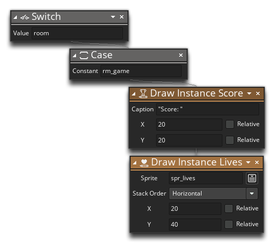
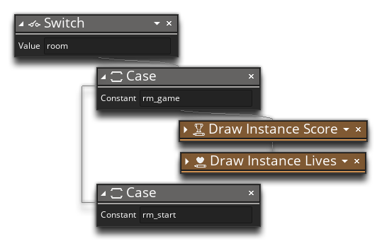
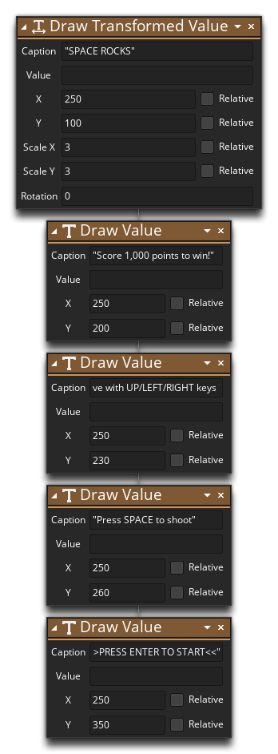
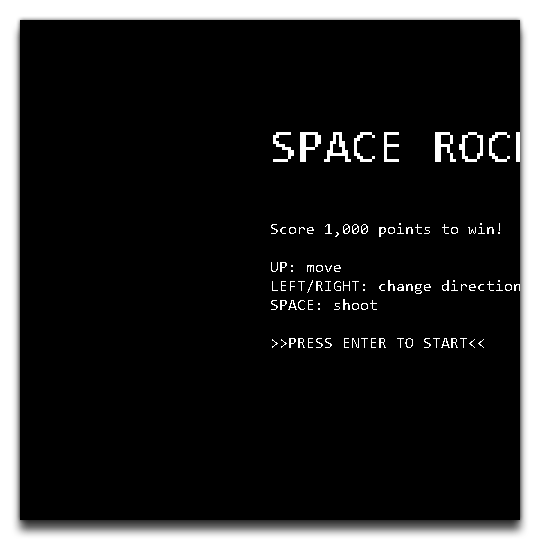
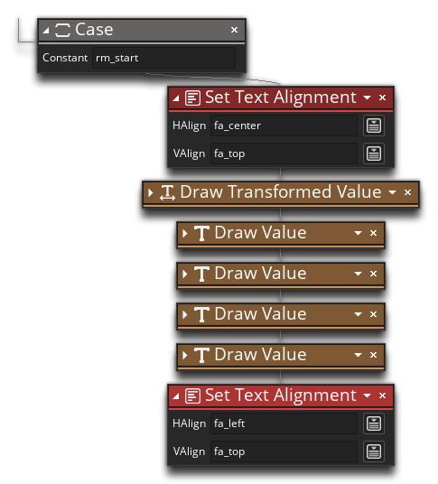
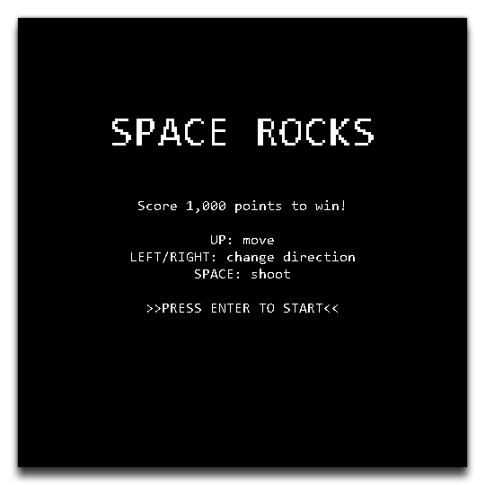
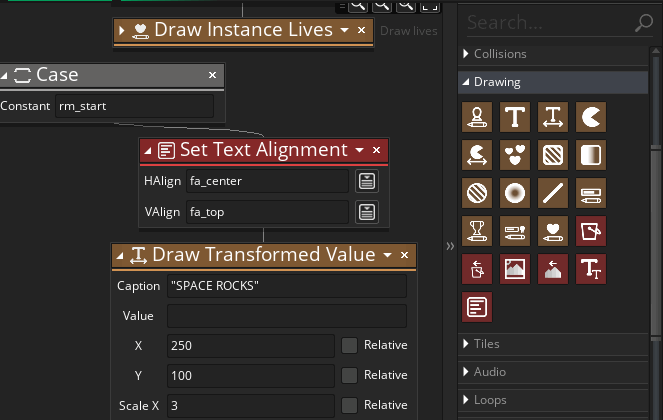
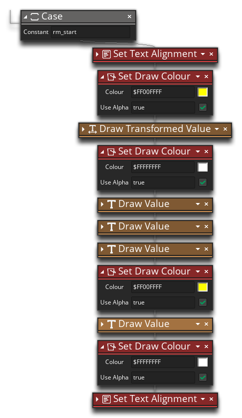

Open up the object "obj_game" (if it's not already) and go to the Draw Event. Since our object is persistent now, the DnD™ we have for drawing the score and lives will run in all the rooms the instance is persisted across and not just the main game room, but we want to draw different text based on the room we are actually in. Now, we could resolve this using a few "if... else if..." checks to see which room we are in and draw the text that's appropriate, but instead we'll use a Switch action.
Using Switch action we can check the room global variable, which holds the ID of the current room this instance is in, and add different Cases for each of the possible values. In each Case we can have the controller draw different things.
So, let's change the draw DnD™ to look like this:

These actions will only be performed when the current room is "rm_game".
We'll set up the rest of the DnD™ now too, with the next room we'll deal with being the "rm_start" room, so add a case for that:

In that Case we want to add the following actions:

Here we are first using the Draw Transformed Value action to draw the game title scaled by 3, halfway across the room, and then we follow that with some calls to Draw Value to draw the game instructions.
Why not try running the game now and seeing how it looks?

That doesn't look quite right, does it? What's happened is that GameMaker Studio 2 has left justified all the text, so we need to tell it to center justify it using the action Set Text Alignment and set it to the constant fa_center for the horizontal align, with no need to set the vertical align. This action will be placed at the beginning of the chain, and then also placed at the end of the chain, but this time setting the justification back to the left (using fa_left) to reset the alignment for all the other text. The complete Case should look like this:

Now, if you run the game again you'll get something like this:

That's looking good, but it needs a bit of colour to live it up. For that we'll need the Set Draw Colour action. This action sets the draw colour for all text and shapes drawn to the screen, so we'll use it before the "Space Rocks" title to tell GameMaker Studio 2 to draw the title in yellow.

Like setting the font or the text alignment, setting the draw colour will change how everything drawn after the action is called is coloured, and since we only want to use the colour to accent the title, we need to reset it again to white after the Draw Transformed Value action. We'll also use it to add an accent to the "PRESS ENTER" text, so add another action changing to yellow before that, and another changing to white again after it. The chain should look like this now:

Click the "Next" button to continue to the next page where we'll fill in the other cases...